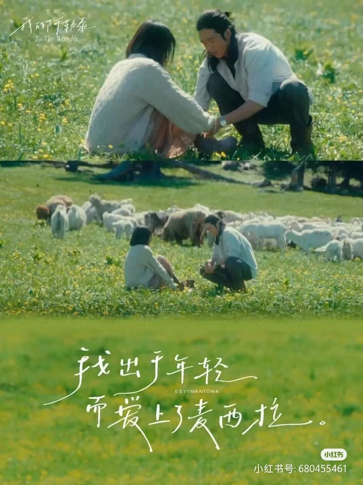
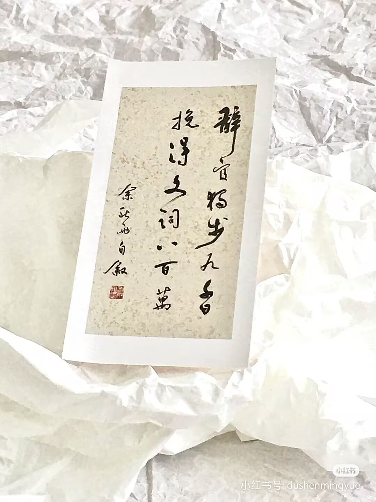
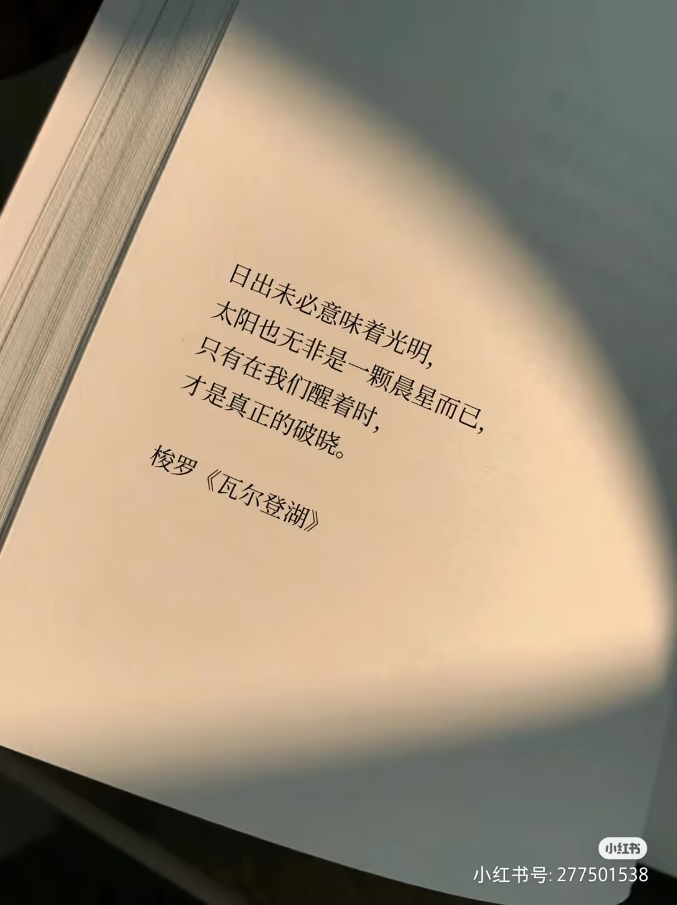
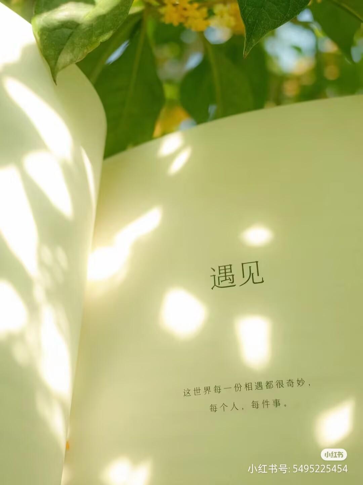

去爱，去感知，去探索，阿勒泰的每一寸土地都藏着故事。阿勒泰的雪山之巅，藏着我不屈的信念。无论生活如何变迁，我都将坚守初心，勇往直前。阿勒泰的风，吹走了我的忧虑，带来了我成长的勇气。在这里，我学会了如何与自我和解，与世界相拥。

局部之困苦，无不源于局部之有限，因而局部的欢愉必是朝向那无限之整体的皈依。所以皈依是一条永恒的路。这便是爱的真意，爱的辽阔与高贵。这爱，非居高的施舍，乃谦恭的仰望，接受苦难，从而走向精神的超越。

生活，原如鸟贩子手里的禽鸟一般，仅有一点小米维系残生，决不会肥胖；日子一久，只落得麻痹了翅子，即使放出门外，早已不能奋飞。

生命中有许多正向时刻，也有许多负向时刻，一个人快乐的秘诀，便是抓住那正向的时刻，使它更充盈；转化负向的时刻，使它得到清洗。有人对我们深深地微笑；乡间道上的油麻菜开花了；炎热的夏天午后突来阵雨和凉风；一双蝴蝶突然飞过窗边；在公园里偶然看见远天的彩虹；读一本好书、听了一段动听的音乐……

简介
《我们仨》是作家杨绛创作的散文集，首次出版于2003年7月。 该书讲述了一个单纯温馨的家庭几十年平淡无奇、相守相助、相聚相失的经历。作者杨绛以简洁而沉重的语言，回忆了先后离她而去的女儿钱瑗、丈夫钱锺书，以及一家三口那些快乐而艰难、爱与痛的日子